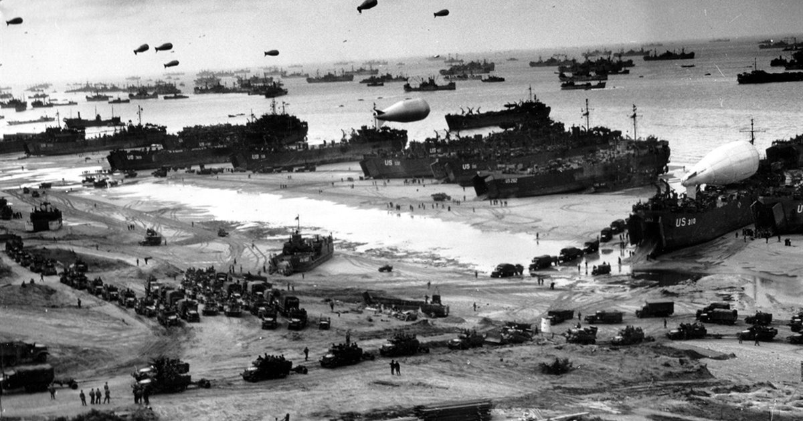
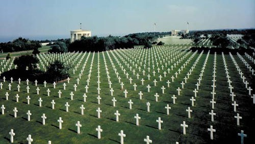

6 · VI · 1944
DÍA-D — NORMANDÍA & PROVENZA
La operación anfibia más grande de la historia.
El día que cambió el rumbo de la Segunda Guerra Mundial.
CIENCIAS SOCIALES · PROF. GIOVANNA SOSA · 2026
▶ PRESIONA → PARA COMENZAR
// SITUACIÓN · EUROPA 1944
Desde 1940, la Alemania nazi dominaba Europa occidental. Francia había caído en seis semanas. Los Aliados debían abrir un frente en el Oeste.
// ENGAÑO ESTRATÉGICO
// OPERACIÓN OVERLORD · PREPARATIVOS
// 6 · VI · 1944 · COSTA DE NORMANDÍA — LAS CINCO PLAYAS
// 6 JUNIO 1944
// EL MOMENTO MÁS OSCURO
"Los hombres de Omaha no tenían otra opción que seguir avanzando, aunque eso significara morir."
// PUNTO DE QUIEBRE
El Gral. Cota avanzó bajo el fuego gritando: "¡Dos tipos de hombres se quedan en esta playa: los muertos y los que van a morir!" Su liderazgo rompió el estancamiento.
// POST D-DAY · LIBERACIÓN

"El día más largo no fue el más largo de la guerra.
Fue el día en que el mundo recobró la esperanza."
En honor a los 156,000 hombres que desembarcaron el 6 de junio de 1944,
y a todos los que dieron su vida por la libertad de Europa.